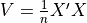
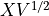

Note
Go to the end to download the full example code.
Implement a new converter¶
By default, sklearn-onnx assumes that a classifier has two outputs (label and probabilities), a regressor has one output (prediction), a transform has one output (the transformed data). This example assumes the model to convert is one of them. In that case, a new converter requires in fact two functions:
a shape calculator: it defines the output shape and type based on the model and input type,
a converter: it actually builds an ONNX graph equivalent to the prediction function to be converted.
This example implements both components for a new model.
Custom model¶
Let’s implement a simple custom model using scikit-learn API. The model is preprocessing which decorrelates correlated random variables. If X is a matrix of features,  is the covariance matrix. We compute .
import pickle
from io import BytesIO
import numpy
from numpy.testing import assert_almost_equal
from onnxruntime import InferenceSession
from sklearn.base import TransformerMixin, BaseEstimator
from sklearn.datasets import load_iris
from skl2onnx.common.data_types import guess_numpy_type
from skl2onnx import to_onnx
from skl2onnx import update_registered_converter
from skl2onnx.algebra.onnx_ops import OnnxMatMul, OnnxSub
class DecorrelateTransformer(TransformerMixin, BaseEstimator):
"""
Decorrelates correlated gaussian features.
:param alpha: avoids non inversible matrices
by adding *alpha* identity matrix
*Attributes*
* `self.mean_`: average
* `self.coef_`: square root of the coveriance matrix
"""
def __init__(self, alpha=0.0):
BaseEstimator.__init__(self)
TransformerMixin.__init__(self)
self.alpha = alpha
def fit(self, X, y=None, sample_weights=None):
if sample_weights is not None:
raise NotImplementedError("sample_weights != None is not implemented.")
self.mean_ = numpy.mean(X, axis=0, keepdims=True)
X = X - self.mean_
V = X.T @ X / X.shape[0]
if self.alpha != 0:
V += numpy.identity(V.shape[0]) * self.alpha
L, P = numpy.linalg.eig(V)
Linv = L ** (-0.5)
diag = numpy.diag(Linv)
root = P @ diag @ P.transpose()
self.coef_ = root
return self
def transform(self, X):
return (X - self.mean_) @ self.coef_
def test_decorrelate_transformer():
data = load_iris()
X = data.data
dec = DecorrelateTransformer()
dec.fit(X)
pred = dec.transform(X)
cov = pred.T @ pred
cov /= cov[0, 0]
assert_almost_equal(numpy.identity(4), cov)
dec = DecorrelateTransformer(alpha=1e-10)
dec.fit(X)
pred = dec.transform(X)
cov = pred.T @ pred
cov /= cov[0, 0]
assert_almost_equal(numpy.identity(4), cov)
st = BytesIO()
pickle.dump(dec, st)
dec2 = pickle.load(BytesIO(st.getvalue()))
assert_almost_equal(dec.mean_, dec2.mean_)
assert_almost_equal(dec.coef_, dec2.coef_)
assert id(dec.mean_) != id(dec2.mean_)
assert id(dec.coef_) != id(dec2.coef_)
test_decorrelate_transformer()
data = load_iris()
X = data.data
dec = DecorrelateTransformer()
dec.fit(X)
pred = dec.transform(X[:5])
print(pred)
[[ 0.0167562 0.52111756 -1.24946737 -0.56194325]
[-0.0727878 -0.80853732 -1.43841018 -0.37441392]
[-0.69971891 -0.09950908 -1.2138161 -0.3499275 ]
[-1.13063404 -0.13540568 -0.79087008 -0.73938966]
[-0.35790036 0.91900236 -1.04034399 -0.6509266 ]]
Trained coefficients.
[[5.84333333 3.05733333 3.758 1.19933333]]
[[ 2.8040383 -0.94252732 -1.22382017 0.36769632]
[-0.94252732 3.03632069 0.86741369 -0.52213719]
[-1.22382017 0.86741369 1.93652687 -2.02453122]
[ 0.36769632 -0.52213719 -2.02453122 4.83455725]]
Conversion into ONNX¶
Let’s try to convert it and see what happens.
try:
to_onnx(dec, X.astype(numpy.float32))
except Exception as e:
print(e)
Unable to find a shape calculator for type '<class '__main__.DecorrelateTransformer'>'.
It usually means the pipeline being converted contains a
transformer or a predictor with no corresponding converter
implemented in sklearn-onnx. If the converted is implemented
in another library, you need to register
the converted so that it can be used by sklearn-onnx (function
update_registered_converter). If the model is not yet covered
by sklearn-onnx, you may raise an issue to
https://github.com/onnx/sklearn-onnx/issues
to get the converter implemented or even contribute to the
project. If the model is a custom model, a new converter must
be implemented. Examples can be found in the gallery.
This error means there is no converter associated to DecorrelateTransformer. Let’s implement it. It requires the two following functions, a shape calculator and a converter with the same signature as below. First the shape calculator. We retrieve the input type add tells the output type has the same type, the same number of rows and a specific number of columns.
def decorrelate_transformer_shape_calculator(operator):
op = operator.raw_operator
input_type = operator.inputs[0].type.__class__
# The shape may be unknown. *get_first_dimension*
# returns the appropriate value, None in most cases
# meaning the transformer can process any batch of observations.
input_dim = operator.inputs[0].get_first_dimension()
output_type = input_type([input_dim, op.coef_.shape[1]])
operator.outputs[0].type = output_type
The converter. One thing we need to pay attention to is the target opset. This information is important to make sure that every node is defined following the specifications of that opset.
def decorrelate_transformer_converter(scope, operator, container):
op = operator.raw_operator
opv = container.target_opset
out = operator.outputs
# We retrieve the unique input.
X = operator.inputs[0]
# In most case, computation happen in floats.
# But it might be with double. ONNX is very strict
# about types, every constant should have the same
# type as the input.
dtype = guess_numpy_type(X.type)
# We tell in ONNX language how to compute the unique output.
# op_version=opv tells which opset is requested
Y = OnnxMatMul(
OnnxSub(X, op.mean_.astype(dtype), op_version=opv),
op.coef_.astype(dtype),
op_version=opv,
output_names=out[:1],
)
Y.add_to(scope, container)
We need to let skl2onnx know about the new converter.
update_registered_converter(
DecorrelateTransformer,
"SklearnDecorrelateTransformer",
decorrelate_transformer_shape_calculator,
decorrelate_transformer_converter,
)
onx = to_onnx(dec, X.astype(numpy.float32))
sess = InferenceSession(onx.SerializeToString(), providers=["CPUExecutionProvider"])
exp = dec.transform(X.astype(numpy.float32))
got = sess.run(None, {"X": X.astype(numpy.float32)})[0]
def diff(p1, p2):
p1 = p1.ravel()
p2 = p2.ravel()
d = numpy.abs(p2 - p1)
return d.max(), (d / numpy.abs(p1)).max()
print(diff(exp, got))
(np.float64(6.04657619085458e-07), np.float64(0.00029514170657146715))
Let’s check it works as well with double.
onx = to_onnx(dec, X.astype(numpy.float64))
sess = InferenceSession(onx.SerializeToString(), providers=["CPUExecutionProvider"])
exp = dec.transform(X.astype(numpy.float64))
got = sess.run(None, {"X": X.astype(numpy.float64)})[0]
print(diff(exp, got))
(np.float64(0.0), np.float64(0.0))
The differences are smaller with double as expected.
Total running time of the script: (0 minutes 0.041 seconds)